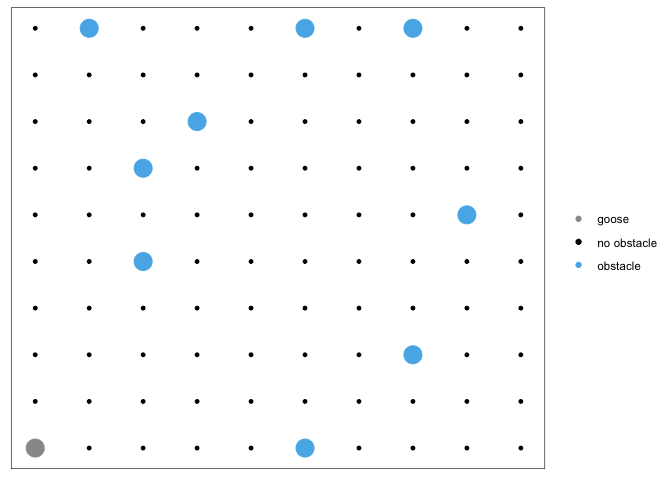
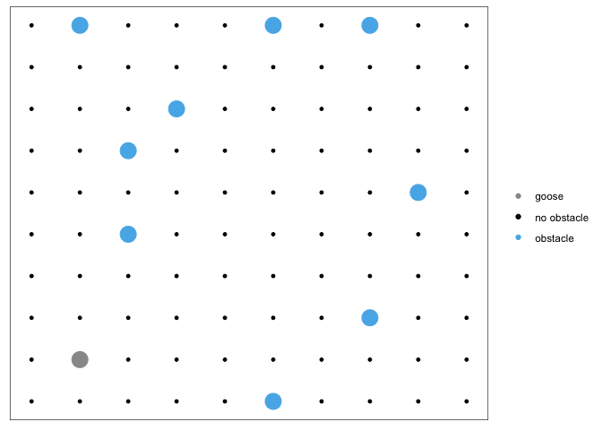

The goal of lab is to provide useful functionality for experimenting with the development of machine learning and articifical intelligence related algorithms. Specifically, lab serves as a laboratory for developing novel ML/RL/AI methods.
Installation
You can install the released version of lab from CRAN with:
And the development version from GitHub with:
Usage
The purpose of lab is to help you get started developing, experimenting, and testing different ML/RL/AI solutions on a variety of basic problems. What’s the point of this? Well, having a consistent structure to test a new method on allows you to easily reproduce results and understand when and how a certain method fails. This is obviously useful if you are interested in developing novel methods.
Let’s look at a very simple example that illustrates how to use this package. We will use the built in goose_game S3 class to see if we can build a very simple model to allow to goose to navigate the obstacles in the goose race. lab provides you with simple tools to get started, as well as importing a variety of handy libraries.
We first will initialize a goose_race and take a look at what we have.
library(lab)
library(tidyverse)
#> ── Attaching packages ────────────────────────────────────────────────────────────────────────────────────────────────────── tidyverse 1.3.0 ──
#> ✓ ggplot2 3.3.0 ✓ purrr 0.3.3
#> ✓ tibble 2.1.3 ✓ dplyr 0.8.5
#> ✓ tidyr 1.0.2 ✓ stringr 1.4.0
#> ✓ readr 1.3.1 ✓ forcats 0.5.0
#> ── Conflicts ───────────────────────────────────────────────────────────────────────────────────────────────────────── tidyverse_conflicts() ──
#> x dplyr::filter() masks stats::filter()
#> x dplyr::lag() masks stats::lag()
gr <- goose_race()
gr
#> $locations
#> # A tibble: 100 x 3
#> x y obstacle_present
#> <int> <int> <dbl>
#> 1 1 1 0
#> 2 1 2 0
#> 3 1 3 0
#> 4 1 4 0
#> 5 1 5 0
#> 6 1 6 0
#> 7 1 7 1
#> 8 1 8 0
#> 9 1 9 0
#> 10 1 10 0
#> # … with 90 more rows
#>
#> $starting_point
#> [1] 1 1
#>
#> $ending_point
#> [1] 10 10
#>
#> $current_location
#> [1] 1 1
#>
#> $on_obstacle
#> [1] FALSE
#>
#> attr(,"class")
#> [1] "goose_race"You can see that we initialize a large 10x10 grid (stored in $locations as a tibble) along with a few other parameters, such as the starting and ending point of the goose race. The goal is to try and develop an algorithm to get the goose to the end of the race.
Let’s start by writing a function that extracts some features for us from our goose’s environment.
extract_features <- function(gr) {
obstacle_df <- look(gr)
if (nrow(obstacle_df) > 0)
obstacle_df$obstacle_present <- TRUE
around_df <- tibble::tibble(x = c(gr$current_location[1] + 1,
gr$current_location[1] - 1,
gr$current_location[1] + 0,
gr$current_location[1] + 0),
y = c(gr$current_location[2] + 0,
gr$current_location[2] - 0,
gr$current_location[2] - 1,
gr$current_location[2] + 1),
direction = c("north", "south", "east", "west"))
feature_df <- dplyr::left_join(around_df, obstacle_df, by = c("x", "y"))
if (nrow(obstacle_df) == 0)
feature_df$obstacle_present <- FALSE
feature_df$obstacle_present[is.na(feature_df$obstacle_present)] <- 0
feature_df %>%
dplyr::select(direction, obstacle_present) %>%
tidyr::pivot_wider(names_from = direction, values_from = obstacle_present) %>%
dplyr::mutate(current_x = gr$current_location[1], current_y = gr$current_location[2])
}You can see how we might use this to try to build a basic model to guide the goose’s behavior in the goose_race. Let’s go through one random iteration first, so we can see how it might pan out.
random_model <- function(gr) {
movement <- sample(c(0, 1), 2, replace = TRUE)
return(movement)
}
run_iteration <- function(gr, n = 20) {
df <- tibble::tibble(north = double(),
south = double(),
east = double(),
west = double(),
current_x = double(),
current_y = double(),
immediate_utility = double(),
eventual_utility = double(),
move_x = double(),
move_y = double())
for (i in 1:n) {
tryCatch({
movement <- random_model()
features <- extract_features(gr)
gr <- move(gr, movement[1], movement[2])
df <- tibble::add_row(df,
north = features$north,
south = features$south,
east = features$east,
west = features$west,
current_x = features$current_x,
current_y = features$current_y,
immediate_utility = !as.numeric(gr$on_obstacle),
move_x = movement[1],
move_y = movement[2])
},
error = function(e) i <- n
)
}
df$eventual_utility <- as.numeric(!(FALSE %in% c(gr$current_location == gr$ending_point)))
return(df)
}We’ve built out a simple model for moving our goose at random, but we are just building out a dataset. Soon, we will build a model and see if the goose can improve based on many iterations of the goose running the race.
First, lets run through the race about 100 times.
run_everything <- function(x) {
gr <- goose_race()
return(run_iteration(gr, n = 20))
}
results <- purrr::map_dfr(1:100, run_everything)Now we can use our result set to build a very simple model. Then we can watch how it works out.
model_x <- glm(eventual_utility ~ north + south + east + west + current_x + current_y,
data = results[results$move_y == 1 & results$move_x == 0,],
family = "binomial")
model_y <- glm(eventual_utility ~ north + south + east + west + current_x + current_y,
data = results[results$move_x == 1 & results$move_y == 0,],
family = "binomial")
model_xy <- glm(eventual_utility ~ north + south + east + west + current_x + current_y,
data = results[results$move_x == 1 & results$move_y == 1,],
family = "binomial")
model_neither <- glm(eventual_utility ~ north + south + east + west + current_x + current_y,
data = results[results$move_x == 0 & results$move_y == 0,],
family = "binomial")We can work with this for the example, but in practice we will likely need more complex models for this particular task. It is not difficult to reason out why that is so.
Let’s see how it does.

We can see our goose in the bottom right corner with all the obstacles. How should we proceed? We will consult the model.
get_prediction <- function(gr) {
purrr::map(list(x = model_x,
y = model_y,
xy = model_xy,
neither = model_neither),
function(x) predict(x,
newdata = extract_features(gr),
type = "response")) %>%
unlist()
}
get_prediction(gr)
#> Warning in predict.lm(object, newdata, se.fit, scale = 1, type = if (type == :
#> prediction from a rank-deficient fit may be misleading
#> Warning in predict.lm(object, newdata, se.fit, scale = 1, type = if (type == :
#> prediction from a rank-deficient fit may be misleading
#> x.1 y.1 xy.1 neither.1
#> 0.08720651 0.11175702 0.13106135 0.09262552So our super basic recommends that we move in to the upper right. lab gives us a very easy way to do this use goose_race.
lab also gives us a way to visualize our movements. Just simply plot the goose_race class.
